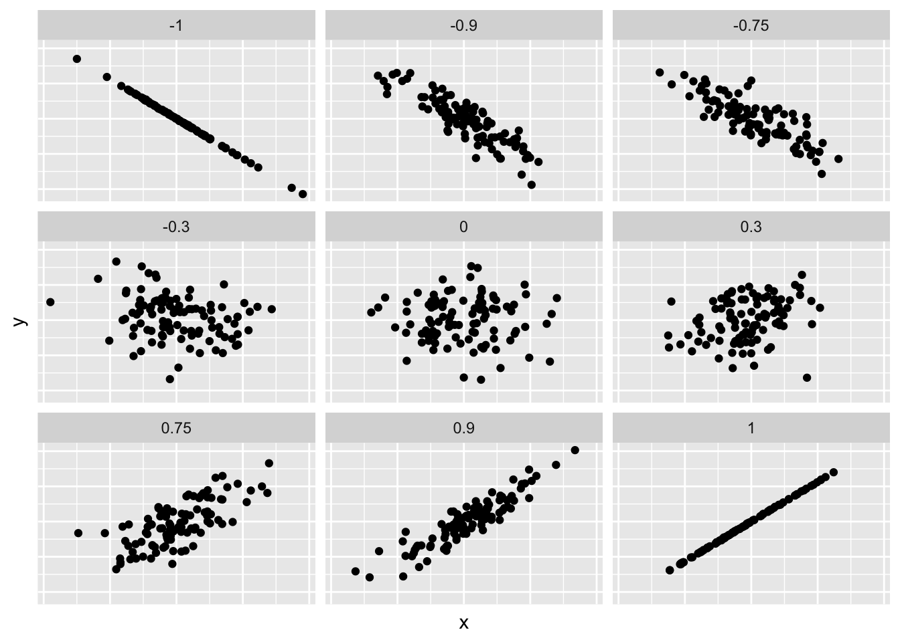

Chapter 8 Three Parameters
This chapter is still very much a draft. Come back in a few weeks for a better version.
In the last two chapters we have dealt with different aspects of models in detail. In chapter 6 we have played around with a lot with beads in an urn and got to know the first parameter, the variability of our results (sigma). However, due to the simplicity of this chapter, we have not yet used functions in R to estimate our model. In chapter 7 we added the intercept as second parameter, where we first estimated a model in R using stan_glm(). But this model was still very simple, because an important part was missing.
In this chapter we will get to know a third parameter, the so-called slope parameter. This allows us to determine models which can indicate changes in values of variables. Don’t worry if this sounds a bit vague. By the end of the chapter you will not only know how to estimate and interpret linear models in R, the concepts from chapter 6 and 7 will also make more sense. This is the last new core concept in this book, all remaining chapters are only about increasing the complexity of our models.
8.1 EDA for trains
As always, it makes sense to start with some exploratory data analysis (EDA). To demonstrate modeling with three parameters, we will use the trains data set from the PPBDS.data package. Recall the discussion from Chapter 3. Enos (2014) randomly placed Spanish-speaking confederates on nine train platforms around Boston, Massachusetts. Exposure to Spanish-speakers – the treatment – influenced attitudes toward immigration. These reactions were measured through changes in answers to three survey questions. Let’s load the libraries we will need in this chapter, all of which we have used before, and look at the data.
## Rows: 115
## Columns: 8
## $ gender <chr> "Female", "Female", "Male", "Male", "Male", "Female", "Fema…
## $ liberal <lgl> FALSE, FALSE, TRUE, FALSE, TRUE, FALSE, FALSE, FALSE, FALSE…
## $ party <chr> "Democrat", "Republican", "Democrat", "Democrat", "Democrat…
## $ age <dbl> 31, 34, 63, 45, 55, 37, 53, 36, 54, 42, 33, 50, 24, 40, 53,…
## $ income <dbl> 135000, 105000, 135000, 300000, 135000, 87500, 87500, 13500…
## $ att_start <dbl> 11, 9, 3, 11, 8, 13, 13, 10, 12, 9, 10, 11, 13, 6, 8, 13, 7…
## $ treatment <fct> Treated, Treated, Treated, Treated, Control, Treated, Contr…
## $ att_end <dbl> 11, 10, 5, 11, 5, 13, 13, 11, 12, 10, 9, 9, 13, 7, 8, 13, 8…Here, we can see variables that indicate each respondent’s gender, political affiliations, age, and income. Additionally, we have variables that indicate whether a subject was in the control or treatment group, and their attitudes toward immigration both before (att_start) and after (att_end) the experiment. You can type ?trains to read the help page for more information about each variable. Let’s restrict attention to a subset of the variables.
It is always smart to look at a some random samples of the data:
## # A tibble: 5 x 4
## age att_end party treatment
## <dbl> <dbl> <chr> <fct>
## 1 30 12 Democrat Treated
## 2 52 7 Democrat Control
## 3 52 7 Democrat Control
## 4 56 11 Democrat Treated
## 5 46 6 Republican Controlatt_end is a measure of person’s attitude toward immigration, a higher number means more conservative, i.e., a more exclusionary stance on immigration into the United States. Running glimpse() is another way of exploring a data set.
## Rows: 115
## Columns: 4
## $ age <dbl> 31, 34, 63, 45, 55, 37, 53, 36, 54, 42, 33, 50, 24, 40, 53,…
## $ att_end <dbl> 11, 10, 5, 11, 5, 13, 13, 11, 12, 10, 9, 9, 13, 7, 8, 13, 8…
## $ party <chr> "Democrat", "Republican", "Democrat", "Democrat", "Democrat…
## $ treatment <fct> Treated, Treated, Treated, Treated, Control, Treated, Contr…Pay attention to the variable types. Do they make sense? Perhaps. But there are certainly grounds for suspicion. Why are age and att_end doubles rather than integers? All the values in the data appear to be integers, so there is no benefit is having these variables be doubles. Why is party a character variable and treatment a factor variable? It could be that these are intentional choices made by the creator of the tibble, i.e., us. These could be mistakes. Or, most likely, these choices are a mixture of sensible and arbitrary. Regardless, it is your responsibility to notice them. You can’t make a good model without looking closely at the data which you are using.
skim from the skimr package is the best way to get an overview of a tibble.
| Name | Piped data |
| Number of rows | 115 |
| Number of columns | 4 |
| _______________________ | |
| Column type frequency: | |
| character | 1 |
| factor | 1 |
| numeric | 2 |
| ________________________ | |
| Group variables | None |
Variable type: character
| skim_variable | n_missing | complete_rate | min | max | empty | n_unique | whitespace |
|---|---|---|---|---|---|---|---|
| party | 0 | 1 | 8 | 10 | 0 | 2 | 0 |
Variable type: factor
| skim_variable | n_missing | complete_rate | ordered | n_unique | top_counts |
|---|---|---|---|---|---|
| treatment | 0 | 1 | FALSE | 2 | Con: 64, Tre: 51 |
Variable type: numeric
| skim_variable | n_missing | complete_rate | mean | sd | p0 | p25 | p50 | p75 | p100 | hist |
|---|---|---|---|---|---|---|---|---|---|---|
| age | 0 | 1 | 42.4 | 12.2 | 20 | 33 | 43 | 52 | 68 | ▆▇▇▇▃ |
| att_end | 0 | 1 | 9.1 | 2.9 | 3 | 7 | 9 | 11 | 15 | ▂▃▇▃▃ |
skim() shows us what the different values of treatment are because it is a factor. Unfortunately, it does not do the same for character variables like party. The ranges for age and att_end seem reasonable. Recall that participants were asked three questions about immigration issues, each of which allowed for an answer indicated strength of agreement on a scale form 1 to 5, with higher values indicating more agreement with conservative viewpoints. att_end is the sum of the responses to the three questions, so the most liberal possible value is 3 and the most conservative is 15.
Always plot your data.
ch8 %>%
ggplot(aes(x = party, y = age)) +
geom_jitter(width = 0.1, height = 0) +
labs(title = "Age by Party Affiliation in Trains Dataset",
subtitle = "Where are the old Republicans?",
x = "Party",
y = "Age")
From this plot, we can gather that there are many more Democrats in this dataset than Republicans. Democrats also span a wider range of ages than Republicans. The mode age for Democrats appears to be 50.
ch8 %>%
ggplot(aes(x = treatment, y = att_end)) +
geom_boxplot() +
labs(title = "Attitude End by Treatment in Trains Dataset",
subtitle = "Did the treatment make people more conservative?",
x = "Treatment",
y = "Attitude After Experiment")
On a boxplot, the top and bottom borders of the box denotes the 75th and 25th percentiles, respectively. The line inside the box denotes the mean of the data. Treated individuals have a higher mean att_end than the control group, and a higher distribution in general, with its 25th percentile lining up with the mean of the control group. The control group has one outlier, while the treatment group has none.
8.2 age as a function of party
We want to build a predictive model and then use that model to draw conclusions about the world. What are the odds that, if a Republican and Democrat show up at the train station, their ages will be at least 5 years apart? We can answer this and similar questions by creating a model that uses party affiliation to predict someone’s age, again following our four key themes.
8.2.1 Wisdom
 FIGURE 8.1: Wisdom
FIGURE 8.1: Wisdom
Before we write any line of code, the first thing we should do is make it clear that our approach is correct. As already seen in other chapters, there are two aspects to clarify. First, is the data suitable to answer our question? And second, is our estimand appropriate?
First, let’s clarify what we want to know. The goal is to find out what age we can expect to find among people of a certain party affiliation. Let’s assume we don’t want to limit ourselves to people in a certain place, but we are interested in an estimate for the whole USA. As far as party affiliation is concerned, we will probably only want to consider Democrats or Republicans. Returning to the first point, is our data suitable to answer our question? trains' includes a variableage’ which indicates the age of a person in years, and a variable `party’ with values ‘Democrat’ or ‘Republican’ which shows their party affiliation. In terms of content this seems to be exactly what we are looking for. Methodologically, however, there could be problems. The data from this study only come from Boston, so the question arises whether we can really draw conclusions for the whole country. In 2018, the median age was 38.8 years in the USA, but 39.4 years in Massachusetts. Although the difference is small, we do not know whether this also applies to Democrats and Republicans separately. Another problem could arise from the fact that Massachusetts (and Boston as an urban area) is very Democratic. As noted earlier, the party affiliates in ‘trains’ are indeed very unequally distributed:
## # A tibble: 2 x 2
## party n
## <chr> <int>
## 1 Democrat 96
## 2 Republican 19With 96 Democrats we could already determine an acceptable estimate of the median age. The sample of 19 Republicans is very small in comparison, and hence more prone to errors. Perhaps Enos happened to catch some Republicans in his study who are significantly younger than the rest? If so, our estimate may not even be representative of Massachusetts.
Overall, there seem to be potential sources of error in our data, but that doesn’t necessarily mean that our estimates will be useless in answering our question. In fact, we will rarely have perfect data sets in which all eventualities have been considered. Our job as data scientists is to apply wisdom to recognize the strengths and weaknesses of our data.
What about the second aspect, the Estimand? Before we discuss whether it can answer our question, it is worth thinking again about what the estimand actually is. First of all, remember that an Estimand is the size we are looking for. We want to determine the body heights of two different groups, so in our model we are looking for two Estimands. So far, so good. It might now make sense to define
\[Estimand_{1} = MedianHeightDems\] \[Estimand_{2} = MedianHeightReps\]
but that is wrong! Instead, our estimands look like this:
\[Estimand_{1} = MedianHeightDems\] \[Estimand_{2} = (MedHeightReps - MedHeightDems)\] The second estimand is therefore not just the median height of the Republicans, but the difference between the median heights of the two groups. You can see very quickly that this gives us exactly the things we want. If we want to have an estimate for a random Democrat, we take estimand 1; if we want to have an estimate for a random Republican, we simply add estimand 2 to estimand 1. Why the effort, when you could simply calculate the values directly? This has to do with how we build regression models, and will make more sense in a few minutes.
Now that we know our estimands, are they suitable to answer our question? The two estimands give us exactly what we want to know, namely the body sizes for members of both parties - so yes. However, they are based on our data set, so there are the same possible sources of error as before. For example, if Enos surveyed too many young Republicans, then estimand 2 would be too low. But again, small inaccuracies are usually not a problem as long as we apply Wisdom and become aware of them.
8.2.2 Justice
 FIGURE 8.2: Justice
FIGURE 8.2: Justice
We have made sure that the data and the estimands are suitable to answer our question. These are the building blocks of our model, and the next step is to investigate whether the model itself is adequate. This involves deciding between prediction and causality, and defining the formal mathematical model.
8.2.2.1 Prediction vs Causality
Are we modeling for prediction or causality? Recall that in a predictive model we are only interested in getting an estimate of Y for any X. The focus is on predicting things - how exactly this happens is not so important to us. If you have headaches and are thinking about taking aspirin, you would probably be interested in a predictive model. You are not really interested in the relationship between an aspirin dose and headaches, but rather how strong your headache is once you take it. Predictive models care nothing about causality.
A causal model, on the other hand, is primarily concerned with the relationship between X and Y themselves. Suppose you work for Pfizer and have discovered a new headache drug that could make billions if approved. However, this requires many studies to get a reliable estimate of which dosage has which effect on humans. Here we are interested in a Model for Causality, because we (primarily) want to know the effect of the drug. We are less interested in the extent of headache that a random person has after taking the drug. Causal models often also deal with prediction, even if only as a means of measuring the quality of the model.
Kommen wir nun zu unserem Modell zum Alter von Demokraten und Republikanern zurück. Es ist recht klar, dass wir hier ein predictive model haben. Was wir haben wollen ist eine Schätzung des Alters einer zufälligen Person, deren Parteizugehörigkeit wir kennen. Es macht nicht viel Sinn, nach dem kausalen Zusammenhang zwischen Parteizugehörigkeit und Körpergröße zu fragen, z.B. “Wenn Joe Republikaner wählen würde, dann wäre er um 4 Jahre jünger”. Someone’s age is the same regardless of the party of which they are a member. The whole thing becomes clearer if we present our model in a Preceptor Table:
| Preceptor Table of age ~ party | ||
|---|---|---|
| ID | Age | Party |
1 |
34 |
Republican |
2 |
? |
? |
... |
... |
... |
55 |
36 |
Democrat |
... |
... |
... |
204 |
44 |
Democrat |
205 |
? |
? |
... |
... |
... |
1,627 |
50 |
Republican |
... |
... |
... |
N |
? |
? |
The purpose of a Preceptor Table is to capture all of the data such that if the question marks were filled out, one wouldn’t need to construct a model. The rows in this Preceptor Table represent the N commuters on which our model is extrapolating, with N being the population of commuters using Boston public transportation. Only 115 of these commuters had their data recorded in the experiment, which is why most observations lack data.
This table is very simple, which is the point. There is no causal effect as we are simply trying to predict the immutable variable of age. Rather than representing unknown causal effects as they may in other Preceptor Tables, the question marks in this table simply denote missing data.
8.2.2.2 The mathematical model
\[ y_i = \beta_1 x_r + \beta_2 x_d + \epsilon_i\]
where \(\epsilon_i \sim N(0, \sigma^2)\). \(\beta_1\) is the average age of Republicans. \(\beta_2\) is the average age of Democrats.
You couldn’t know the true value of our parameters (\(\beta_1\), \(\beta_2\), and \(\sigma\)) unless you surveyed every single commuter in the population. This is why we use models.
8.2.3 Courage
 FIGURE 8.3: Courage
FIGURE 8.3: Courage
8.2.3.1 The fitted model
## stan_glm
## family: gaussian [identity]
## formula: age ~ party - 1
## observations: 115
## predictors: 2
## ------
## Median MAD_SD
## partyDemocrat 42.6 1.3
## partyRepublican 41.1 2.8
##
## Auxiliary parameter(s):
## Median MAD_SD
## sigma 12.3 0.8
##
## ------
## * For help interpreting the printed output see ?print.stanreg
## * For info on the priors used see ?prior_summary.stanregTo continue our discussion of these values, we’ll bring back our table. We’ll display a few specific observations (all of which had their data recorded) rather than representing all N commuters.
This time, we’ll include each individual’s fitted value for age from our model. We’ll also include their residual. Remember that the actual age of each observation, \(y_i\), is the addition of the model’s prediction (the fitted value) and real-world noise (the residual).
| 8 Observations from Trains Dataset | ||||
|---|---|---|---|---|
| ID | Party | $$y_i$$ | fitted | residual |
4 |
Democrat |
31 |
42.6 |
11.6 |
5,051 |
Republican |
34 |
41.1 |
7.1 |
76 |
Democrat |
63 |
42.6 |
-20.4 |
80,050 |
Democrat |
45 |
42.6 |
-2.4 |
578 |
Republican |
55 |
41.1 |
-13.9 |
23 |
Democrat |
53 |
42.6 |
-10.4 |
9,088 |
Republican |
24 |
41.1 |
17.1 |
888 |
Democrat |
45 |
42.6 |
-2.4 |
The fitted values are the same for all Republicans and for all Democrats, as the fitted value is one of the two estimates output by our model. However, almost all of the residuals are different due to each observation’s own variation from the fitted value estimate. The only observations with the same residual are 80,050 and 888. This is because they are both Democrats that are the same age: with the same \(y_i\) and \(\hat{y_i}\), the calculation of their epsilon values are identical. This table shows how just a sample of 8 individuals captures a wide range of residuals, making it difficult to predict the age of a new individual who walks in the room even using our model.
8.2.3.2 Unmodeled variation
DK: Discuss meaning of sigma here. Show the graphics that are discussed in themes.Rmd. Three histograms. Discuss unmodelled variation. Why are the residuals so big? What would they look like with a better model?
8.2.4 Temperance
 FIGURE 8.4: Temperance
FIGURE 8.4: Temperance
8.2.4.1 Making Predictions
A new person shows up. posterior_predict(), new_data argument. What are the odds that he is older than 50?
What will the age difference be between the oldest Democrat and the youngest Republican if three from each party show up?
8.2.4.2 Unknown unknowns
Yet another area of uncertainty that might not be immediately obvious is the possibility of unknown unknowns — that is, all the things that might change with time. How do we know that our model — which relies heavily on figures like income and party affiliation — will still be able to draw conclusions about America 50 years from now? Mass migrations, political revolutions, and world wars are just a few of the things that could render all the conclusions we draw from the trains dataset moot. And, other than expanding our confidence intervals to the point of uselessness, there’s no way to account for the unknown unknowns.
In short, while we can accept the model as representative of the United States at or around 2012 (the year in which Enos conducted his study), we cannot reasonably extrapolate that to the far future.
It is always important to keep the problem of validity in the back of our minds as we investigate data sets and how the data within these sets are collected. Given the many factors — those we are aware of and those we are not aware of — that go into any kind of data collection, there is no way to guarantee 100 percent validity.
8.3 att_end as a function of treatment
Above, we created a predictive model: with someone’s party affiliation, we can make a better guess as to what their age is. There was nothing causal about that model. Changing someone’s party registration can not change their age. In this example, we build a causal model. What is the effect of exposing someone on a train platform to Spanish-speakers on their attitudes toward immigration?
8.3.1 Wisdom
FIGURE 8.5: Wisdom
8.3.2 Justice
FIGURE 8.6: Justice
8.3.3 Courage
FIGURE 8.7: Courage
## stan_glm
## family: gaussian [identity]
## formula: att_end ~ treatment - 1
## observations: 115
## predictors: 2
## ------
## Median MAD_SD
## treatmentTreated 10.0 0.4
## treatmentControl 8.5 0.4
##
## Auxiliary parameter(s):
## Median MAD_SD
## sigma 2.8 0.2
##
## ------
## * For help interpreting the printed output see ?print.stanreg
## * For info on the priors used see ?prior_summary.stanregNote that for both Democrats and Republicans, the prediction interval is significantly wider than the confidence interval. This discrepancy illustrates the unmodeled variation of the dataset: while the mean values, as indicated by the “fit” column, are still the best guess you can make for any given subject, we are less confident in the value range of that individual subject than we are of the value range of the mean. The unmodeled variation widens the prediction intervals relative to the confidence intervals.
Recall our discussion regarding the wider confidence intervals for Republican subjects than Democrat subjects. Although the Republican and Democrat average incomes had vastly different confidence intervals — the Republican confidence intervals were much wider — they have very similar prediction intervals. Although the parameter uncertainty of these two parameters were very different, the unmodeled variation for both parameters was roughly the same. Even though the data points were equally spread out for both Democrat and Republican income, were were able to more confidently pinpoint a true value for democrat income because we had more data to work with.
In many cases, the most important use of a model is for prediction. We use them to make predictions about data which we have not yet seen.
And we can reconstruct the table by filling in the unknowns with the predictions (note that these are unchanged) and their associated levels of uncertainty (which HAVE changed to accommodate for individual variation within the data):
| Ending Attitudes on Immigration of 7 Random Respondents | ||
|---|---|---|
| Subject | $$Y_c(u)$$ | $$Y_t(u)$$ |
| 7 | 8.45 (2.9-14.0) | 11 |
| 6,041 | 8.45 (2.9-14.0) | 10 |
| 67 | 8.45 (2.9-14.0) | 5 |
| 40,080 | 8.45 (2.9-14.0) | 11 |
| 758 | 5 | 10 (4.4-15.6) |
| 32 | 8.45 (2.9-14.0) | 13 |
| 8,809 | 13 | 10 (4.4-15.6) |
8.3.4 Temperance
FIGURE 8.8: Temperance
There are various sources of uncertainties and problems that have addressed in previous chapters and again in this chapter. It’s important that you always have these in the back of your mind when working with data:
Validity. At the surface level, parameter names might not invoke too much thought — but once you really sit down and think about the story the numbers are trying to tell, it’s not always the case that the numbers deserve to tell that story. In our earlier discussion regarding
incomeandatt_end, the conclusions we draw from these data might be misleading just because the way they were collected or computed inevitably change these conclusions. Even when there’s nothing WRONG with a setup, we need to keep in mind that the smallest differencesWhen we dive deeper into the data, we run into the issue of parameter uncertainty, which is the uncertainty associated with our analysis of summary parameters, such as mean, median, and range. In our above analysis with the
trainsdataset, we account for parameter uncertainty using confidence intervals.As great as confidence intervals are, they don’t capture the uncertainty of using summary statistics to predict parameter values of random individuals. We are more sure, for example, about the range of possible incomes for the mean income of American democrats than we are about the range of possible incomes for a single American democrat, whose income could stray far from the mean democrat income. This unmodeled variation, or variation between data points that is not fully captured by bootstrapping, deserves much consideration when dealing with data.
Unknown unknowns are an especially unavoidable source of uncertainty. The world is changing, and people 50 years from now might act differently and have vastly different lifestyles and characteristics; in the case of the
trainsdataset, it wouldn’t be unreasonable to expect completely different combinations of income and party affiliation. That would render our mean income, median ratio, and prediction intervals for both those measures useless.
The fitted value of att_end is 8.45 for the control group and 10 for the treated group. Because a higher att_end means more conservative towards stances on immigration, it seems that treated individuals had more conservative stances on this issue than the control group by the end of the study.
8.3.5 Model Structure
Our predictive model helped us make guesses as to what an individual’s age is. However, that’s just about all we can do with this relationship. Recall that the trains dataset was originally introduced in the context of the Rubin Causal Model back in Chapter 3. That model cannot be applied to the relationship between party and income because these values were independently decided outside the experiment — although we were able to identify correlations between those two variables, the combinations of party and income were predetermined and not randomly assigned in a way that allows us to establish a causal relationship. If an individual suddenly decided to change party affiliations, we wouldn’t suddenly expect his or her income to spike or plummet.
In conclusion, while we can explore correlations or trends between party and income, we cannot label these correlations or trends as causal. However, treatment was a variable that was randomly assigned to subjects, and we have a variable that was measured after this random assignment, att_end. With this setup, we can calculate the Average Treatment Effect, or the average difference in att_end for treated subjects and control subjects.
Now, let’s make a Preceptor Table for this data:
| Preceptor Table of att_end ~ treatment | ||
|---|---|---|
| ID | treatment | att_end |
1 |
treated |
11 |
2 |
? |
? |
... |
... |
... |
75 |
control |
5 |
... |
... |
... |
564 |
control |
13 |
565 |
? |
? |
... |
... |
... |
10,627 |
treated |
11 |
... |
... |
... |
N |
? |
? |
Preceptor Tables aim to capture all of the data such that if the question marks were filled out, one wouldn’t need to construct a model. The rows in this Preceptor Table represent the N commuters on which our model is extrapolating, with N being the population of commuters using Boston public transportation. However, we’re going to need a different kind of table if we want to display the causal effect of being treated – more with this soon.
Next, the second part of model structure, the formula.
\[ y_i = b_1 x_t + b_2 x_c\] Once again, we start here. We can make our parameters constants, \(\hat{b_1}\) and \(\hat{b_1}\), by assigning them to the estimates of the model. Plugging in these numbers outputs an estimated att_end for the observation, or our fitted value \(\hat{y_i}\).
\[ \hat{y_i} = \hat{b_1} x_t + \hat{b_2} x_c \] \[ \hat{y_i} = 8.45x_t + 10x_c \] When the individual is treated (\(x_t\)=1 and \(x_c\)=0), their fitted value is 8.45. When the individual is a control (\(x_t\)=0 and \(x_c\)=1), their fiited value is 42.6.
Subtract the recorded att_end by fitted value for the epsilon value… \[\epsilon_i = y_i - \hat{y_i}\] …And you can now complete your equation. \[ y_i = \hat{b_1}x_r + \hat{b_2} x_d + \epsilon_i \] Note that the math for both the predictive model we worked on earlier and this model is identical. It is not the calculations for the residual, fitted value, or parameter estimates that differ between these two model types; rather, it is how one uses and interprets these numbers. While predictive models are simply used for predicting another variable’s value (in the previous case, age), we can use these numbers to calculate the effect of one variable (treatment) on another (att_end) for each individual observation.
Now, we’ll create a Rubin Causal Model table of possible outcomes, as we did back in ch3. We’ll do this using 7 random observations from the trains dataset.
#Adding question marks where necessary
trains_RCM <- trains %>%
pivot_wider(names_from = treatment, values_from = att_end) %>%
slice(1:7) %>%
mutate(subject = 1:7) %>%
replace_na(list(Treated = "?", Control = "?")) %>%
select(subject, Control, Treated)
trains_RCM$subject <- c("7", "6,041", "67", "40,080", "758", "32", "8,809")
#Mathematical notation
trains_RCM %>%
gt() %>%
cols_label(subject = md("**Subject**"),
Control = md("**$$Y_c(u)$$**"),
Treated = md("**$$Y_t(u)$$**")) %>%
tab_style(cell_borders(sides = "right"),
location = cells_body(columns = vars(subject))) %>%
cols_align(align = "center", columns = TRUE) %>%
tab_header(title = "Ending Attitudes on Immigration of 7 Random Respondents")| Ending Attitudes on Immigration of 7 Random Respondents | ||
|---|---|---|
| Subject | $$Y_c(u)$$ | $$Y_t(u)$$ |
| 7 | ? | 11 |
| 6,041 | ? | 10 |
| 67 | ? | 5 |
| 40,080 | ? | 11 |
| 758 | 5 | ? |
| 32 | ? | 13 |
| 8,809 | 13 | ? |
Recall that the Rubin Causal Model centers on filling in the unknowns, which are indicated by the “?”s in the table. There’s one way we could fill in the missing values — we could use our approximations we generated with our lm() model: that is, for each unknown Treated value, we use 10, and for each unknown Control value, we use 8.45.
| Ending Attitudes on Immigration of 7 Random Respondents | ||
|---|---|---|
| Subject | $$Y_c(u)$$ | $$Y_t(u)$$ |
| 7 | 8.45 | 11 |
| 6,041 | 8.45 | 10 |
| 67 | 8.45 | 5 |
| 40,080 | 8.45 | 11 |
| 758 | 5 | 10 |
| 32 | 8.45 | 13 |
| 8,809 | 13 | 10 |
This table looks a bit funky: take a look at subject 67. According to this model, subject 67’s attitude under control would be HIGHER than his/her attitude under treatment, which corresponds to a negative treatment effect. This would mean that he/she would become more LIBERAL after undergoing treatment, which flies in the face of the ATE we calculated earlier. Another example of this can be seen with subject 32, whose predicted att_end under treatment is lower than his/her att_end under control (also signifying a shift towards liberal attitudes regarding immigration).
Clearly, using the same control and treatment values to fill in the unknowns doesn’t capture the entire picture as it does with a predictive model. While using lm() to fill in the att_end unknowns towards the center of the distribution, it makes less sense for values towards the outskirts of the dataset. So, how can we predict outcomes in a way that equally addresses data towards the center of the distribution, and data that isn’t?
One such way is by attaching the ATE, which we previously calculated to be -1.55, in the appropriate direction to fill in the unknowns:
## # A tibble: 2 x 4
## term estimate conf.low conf.high
## <chr> <dbl> <dbl> <dbl>
## 1 (Intercept) 8.45 7.77 9.14
## 2 treatmentTreated 1.55 0.514 2.58| Ending Attitudes on Immigration of 7 Random Respondents | ||
|---|---|---|
| Subject | $$Y_c(u)$$ | $$Y_t(u)$$ |
| 7 | 9.45 | 11 |
| 6,041 | 8.45 | 10 |
| 67 | 3.45 | 5 |
| 40,080 | 9.45 | 11 |
| 758 | 5 | 6.55 |
| 32 | 11.45 | 13 |
| 8,809 | 13 | 14.55 |
The usage of this table shows how a causal model is used differently than a predictive model. Unlike before, it wasn’t enough to fill in our unknowns with the parameter estimates. This is because we aren’t merely predicting their att_end, a variable that, unlike age, could be changed by exposure to a treatment variable. By using the ATE, we were able to make a more informed prediction on any individual’s att_end had they been placed in the other group.
8.3.6 Parameter Uncertainty
Here, we see that the average treatment effect is -1.55; this is the average change in att_end caused by treatment (if this statistic looks unfamiliar, refer back to chapter 3 for a refresher on ATE). But how confident are we in this ATE? We can use lm() again to generate confidence intervals for our parameters and for this value:
#This is necessary so we can see the offset as caused by treatmentTreated, not treatmentControl.
trains$treatment <-fct_relevel(trains$treatment, "Control", "Treated")
lm(data = trains, att_end ~ treatment - 1) %>%
tidy(conf.int = TRUE) %>%
select(term, estimate, conf.low, conf.high)## # A tibble: 2 x 4
## term estimate conf.low conf.high
## <chr> <dbl> <dbl> <dbl>
## 1 treatmentControl 8.45 7.77 9.14
## 2 treatmentTreated 10. 9.23 10.8##
## Call:
## lm(formula = att_end ~ treatment - 1, data = trains)
##
## Residuals:
## Min 1Q Median 3Q Max
## -6.00 -2.00 0.00 2.00 6.55
##
## Coefficients:
## Estimate Std. Error t value Pr(>|t|)
## treatmentControl 8.453 0.347 24.4 <2e-16 ***
## treatmentTreated 10.000 0.389 25.7 <2e-16 ***
## ---
## Signif. codes: 0 '***' 0.001 '**' 0.01 '*' 0.05 '.' 0.1 ' ' 1
##
## Residual standard error: 2.8 on 113 degrees of freedom
## Multiple R-squared: 0.917, Adjusted R-squared: 0.916
## F-statistic: 627 on 2 and 113 DF, p-value: <2e-16Our measure of confidence for the ATE is known as the residual standard error, which in this case is 2.78. The residual standard error show our confidence in the average treatment effect of the trains dataset being representative of the true average treatment effect on Boston commuters.
8.3.7 Uncertainties
Page built: 2020-10-04